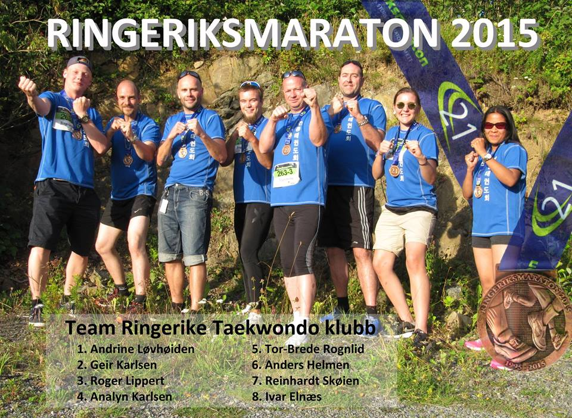

Innlegg
Vel løpt i Ringeriksmaraton

Ringerike Taekwondo klubb stilte lag i årets Ringeriksmaraton. En sprek gjeng som ga alt i løypa.
Tiden ble 4:14:46 på vårt mix-lag, som bestod av:
- Andrine Løvhøiden
- Geir Karlsen
- Roger Lippert
- Analyn Karlsen
- Tor-Brede Rognlid
- Anders S. Helmen
- Reinhardt Skøien
- Ivar Elnæs (med kvinneparykk)